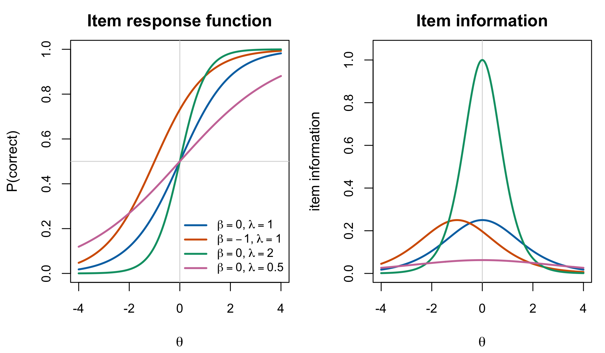

3 Foundations: the Rasch and 2PL Models
The book carries two measurement models. They differ by one parameter, and almost everything that follows holds for both. The exceptions are few, and this chapter establishes them, because they are what makes the Rasch model the cleaner setting in which to ask the book’s question and the 2PL the more general setting in which to check that the answer survives.
3.1 The models
Person \(p\) meets item \(i\) and responds \(U_{pi} \in \{0,1\}\). Write \(\pi_{pi} = \Pr(U_{pi} = 1 \mid \theta_p, \beta_i, \lambda_i)\). The two-parameter logistic model is
\[ \operatorname{logit}(\pi_{pi}) = \lambda_i(\theta_p - \beta_i), \qquad \pi_{pi} = \frac{\exp\{\lambda_i(\theta_p - \beta_i)\}}{1 + \exp\{\lambda_i(\theta_p - \beta_i)\}}, \tag{3.1}\]
with \(\theta_p\) the person’s latent trait, \(\beta_i\) the item’s difficulty, and \(\lambda_i > 0\) its discrimination. The Rasch model is Equation 3.1 with \(\lambda_i \equiv 1\):
\[ \operatorname{logit}(\pi_{pi}) = \theta_p - \beta_i . \tag{3.2}\]
Read Equation 3.2 as a statement about log-odds. A person one logit above an item’s difficulty has odds \(e \approx 2.7\) of answering correctly; the same person meets an item one logit harder and the odds return to even. The scale is a scale of log-odds differences, and \(\theta_p\) and \(\beta_i\) live on it together — which is why, as Chapter 4 shows, neither is identified without a convention about where its origin sits.

Discrimination changes what a unit of that scale means, item by item. In Equation 3.1 the item response function crosses one half at \(\theta_p = \beta_i\) regardless of \(\lambda_i\), but its slope there is \(\lambda_i/4\): a high-discrimination item separates people sharply near its difficulty and tells you little elsewhere, while a low-discrimination item is mildly informative over a wide range. Figure 3.1 shows both panels, and Chapter 7 makes the right-hand one quantitative.
3.2 Local independence
Both models are completed by an independence assumption, and it has two parts that are worth separating because a later chapter modifies one of them and not the other.
Within a person, across items. Given \(\theta_p\) and the item parameters, the responses \(U_{p1},\dots,U_{pI}\) are mutually independent. What a person does on item 3 tells you nothing about what they do on item 7 once you know their trait; all the dependence among a person’s responses runs through \(\theta_p\). This is the assumption that makes a person’s likelihood a product, and it is what “the trait explains the responses” means formally.
Between persons. Given the parameters, the response vectors \(\mathbf{U}_1,\dots,\mathbf{U}_P\) are mutually independent.
The first assumption is a claim about the measurement model and survives everything this book does. The second concerns the sampling of persons. If the \(\theta_p\) are independent draws from a common fixed \(G\), integrating each trait separately leaves the response vectors marginally independent and identically distributed. Marginal dependence appears only when one also integrates over shared uncertain hyperparameters or a random \(G\). Shrinkage is posterior partial pooling toward the population model; it can occur in empirical Bayes even when fitted hyperparameters are treated as fixed, so it is not a synonym for marginal dependence (Chapter 11).
Under both parts, the likelihood of one person’s responses is
\[ L(\theta_p, \boldsymbol\beta, \boldsymbol\lambda \mid \mathbf{u}_p) = \prod_{i=1}^{I} \pi_{pi}^{u_{pi}} (1 - \pi_{pi})^{1 - u_{pi}}, \tag{3.3}\]
and the joint likelihood is the product of Equation 3.3 over persons.
3.3 Sufficiency
Substituting Equation 3.2 into Equation 3.3 and collecting terms gives the Rasch likelihood a particular shape:
\[ L(\theta_p, \boldsymbol\beta \mid \mathbf{u}_p) = \frac{\exp\bigl(r_p\theta_p - \sum_i u_{pi}\beta_i\bigr)} {\prod_{i=1}^{I}\{1 + \exp(\theta_p - \beta_i)\}}, \qquad r_p = \sum_{i=1}^{I} u_{pi}. \tag{3.4}\]
The person’s total score \(r_p\) is the only feature of \(\mathbf{u}_p\) that appears alongside \(\theta_p\). Everything else about which particular items were answered correctly enters only through the \(\beta_i\) term and the denominator, neither of which involves \(\theta_p\).
Theorem 3.1 Sufficiency in the Rasch model. Restated from Debelak et al. (2022, §§ 2.4.1, 2.4.3)
Under the Rasch model with local independence, \(r_p = \sum_i u_{pi}\) is sufficient for \(\theta_p\), and \(c_i = \sum_p u_{pi}\) is sufficient for \(\beta_i\).
Proof. Equation 3.4 is an exponential family in \(\theta_p\) with natural statistic \(r_p\): writing it as \(h(\mathbf{u}_p)\exp\{r_p\theta_p - A(\theta_p,\boldsymbol\beta)\}\) with \(h(\mathbf{u}_p) = \exp(-\sum_i u_{pi}\beta_i)\) and \(A\) the log-denominator, the factorization criterion applies directly. The statement for \(c_i\) follows by the same argument on the joint likelihood, which is symmetric in the two indices. ∎
The consequence is the one Debelak et al. state plainly: a sufficient statistic extracts all the information the sample carries about the quantity of interest, so knowing \(r_p\) makes the individual responses irrelevant for estimating \(\theta_p\). Two students who answer eight of twenty items correctly receive the same Rasch estimate whichever eight they were. Whether that is a feature or a defect is a substantive question about the construct being measured, not a statistical one, and Chapter 23 lists it among the things this book does not settle.
The Rasch model therefore admits conditional maximum likelihood: one can condition on \(r_p\) and obtain a likelihood for \(\boldsymbol\beta\) in which \(\theta_p\) does not appear (Chapter 5). The model also has the property Rasch called specific objectivity — comparisons between two items do not depend on which persons were used to make them, and comparisons between two persons do not depend on which items. Sufficiency and specific objectivity are closely related consequences of the Rasch structure; they are not treated here as logically equivalent without additional assumptions.
3.4 What the 2PL gives up
Repeat the collection step for Equation 3.1 and the shape does not survive:
\[ L(\theta_p, \boldsymbol\beta, \boldsymbol\lambda \mid \mathbf{u}_p) = \frac{\exp\bigl(\theta_p\sum_i \lambda_i u_{pi} - \sum_i \lambda_i u_{pi}\beta_i\bigr)} {\prod_{i=1}^{I}\bigl[1 + \exp\{\lambda_i(\theta_p - \beta_i)\}\bigr]}. \tag{3.5}\]
The statistic paired with \(\theta_p\) is now the weighted score \(\sum_i \lambda_i u_{pi}\).
Proposition 3.1 A parameter-indexed 2PL reduction. Derived here; no originality claim
Conditional on fixed known discriminations \(\boldsymbol\lambda\), the weighted score \(T_{\boldsymbol\lambda}(\mathbf{u}_p)=\sum_i \lambda_i u_{pi}\) is sufficient for \(\theta_p\). When \(\boldsymbol\lambda\) is unknown, that parameter-indexed expression is not a statistic and therefore cannot supply the parameter-free total-score conditioning used by ordinary Rasch CML.
Proof. For each fixed \(\boldsymbol\lambda\), Equation 3.5 factors through \(T_{\boldsymbol\lambda}\), so the factorization criterion gives conditional sufficiency. A statistic, however, is a function of the observations that does not depend on the unknown parameter. Since changing an unknown \(\boldsymbol\lambda\) changes \(T_{\boldsymbol\lambda}\) for the same response vector, it cannot be used as an observed conditioning statistic unless the discriminations have first been fixed. This statement does not claim that the full response vector is insufficient—it is trivially sufficient— or prove the nonexistence of every possible reduction. ∎
The reason to state the proposition is that three consequences run from the missing Rasch-style reduction through the rest of the book.
Ordinary Rasch conditional maximum likelihood does not carry over. Rasch CML conditions on the parameter-free person total. The 2PL weighted score above cannot play that role while its discriminations are unknown. This matters more than a lost computational option: Rasch CML assumes nothing about the distribution of \(\theta\) (Chapter 5), making it a useful reference for the cost of assuming \(G\). This chapter does not claim that no conditional procedure can be constructed for any restricted 2PL setting; it claims only that the ordinary Rasch elimination is unavailable.
Specific objectivity goes with it. Item comparisons under the 2PL depend on where on the scale the comparison is made, because two items with different discriminations do not maintain a constant log-odds difference across \(\theta\).
Two students with the same number correct can receive different estimates. Which items they answered now matters, which some would call a gain in fidelity and others a loss in interpretability. It is a real difference in what the model claims about the construct, not a technicality.
None of this makes the 2PL a worse model. It makes it a model in which the book’s central question — what does assuming a shape for \(G\) cost? — is harder to isolate. The book therefore develops arguments in the Rasch setting where they are cleanest and marks each place the 2PL differs.
Part VIII gathers the three differences that need more than a local qualification. Follow Chapter 24 for discrimination and information, Chapter 25 for reliability, and Chapter 26 for identification and the DPM. That route is an extension from this Rasch-centred spine, not a second derivation of every chapter under the 2PL.
3.5 Fit, and the dispute this book does not enter
Two topics border this chapter and are deliberately bounded.
Assessing fit. Whether a given data set is consistent with Equation 3.2 is checked by item-fit and person-fit statistics, by tests of the conditional independence assumption, and by graphical comparison of observed and expected response functions; Debelak et al. (2022, ch. 4) is the practical treatment. This book takes fit as given and asks a different question — given that the measurement model holds, what does the population assumption cost — and Chapter 23 flags the interaction between the two as unexamined.
Rasch measurement versus item response theory. There is a long dispute over whether the Rasch model is one model among many, to be selected on fit, or a definition of measurement that data must meet to be measured at all. The properties in Section 3.3 are what the second position is built on. This book takes the first position by default, because it compares the Rasch model with the 2PL on statistical grounds, but nothing in its arguments depends on the choice. Readers who hold the second position can read every 2PL result as a description of what is lost.
3.6 Sources and provenance
The model in Equation 3.2 is Rasch’s (1960), and the properties in Section 3.3 are what he built the model to have; this book cites him for the model and takes its statements of the properties from Debelak et al. (2022, secs. 2.3–2.4), whose treatment is the closest to the notation used here. The sufficiency result is attributed directly to Debelak et al. (2022, §§ 2.4.1, 2.4.3). Andersen (1970) is not used as its source: the Andersen theorem discussed later by Debelak concerns a different characterization result.
The 2PL in Equation 3.1 is Birnbaum’s, introduced in Lord and Novick’s Statistical Theories of Mental Test Scores (1968); the corpus holds it through Baker and Kim (2004, ch. 5), which names Birnbaum as its origin, and the citation is secondary under R3b for the same reason.
The separation of local independence into its within-person and between-person parts follows the Appendix A draft (§ A.3.2) prepared for the APM revision. That draft carries no citation authority here. The fixed-\(G\) marginal i.i.d. result follows by integrating the person-specific latent variables separately; dependence under shared uncertain hyperparameters and posterior shrinkage are kept distinct above.
Proposition 3.1 is elementary and is derived here without an originality claim. It records only what Equation 3.5 establishes conditional on fixed discriminations and explicitly does not make a minimal-sufficiency claim.